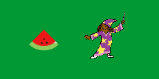

Relatively Important Stuff

Reflection
The goal of the game is too shoot the fruit by clicking them, gaining points for each fruit you shoot.
Forever loops were used to constantly check if the conditions/variables were fulfilled (level number, lives left, time left)
and change the game in correspondence (change game speed, end game).
Increments were used to add points when the fruit was clicked, and too remove points whenever the fruit was not clicked in
time, as well as a time variable that would count down.
The barebones and simple nature of the game did not provide any real difficulties or intuitive oppurtunities.
Reflection
- The story is about your path to becoming a knight.
- The code is pretty much all basic python that we have learned. No new python concepts were necessary.
- Once again, because of the basic nature of the code, no issues came up.
- I feel that if I had started earlier I would have been able to hit all the plot points that I had laid out beforehand. The
story was only half complete by the due date, so I had to void a complete other branch of the story, instead replacing it
with a cheap cop out.
- I don't really remember the details of the other stories I read sry.
- If I could do this again, I would, as I said, start earlier so I could expand the plot to its fullest.